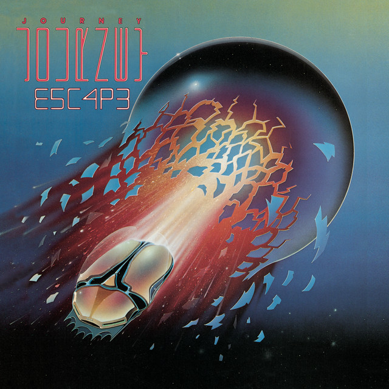
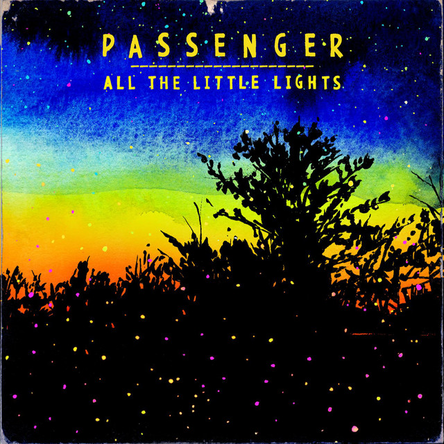
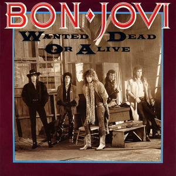
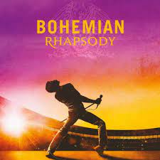
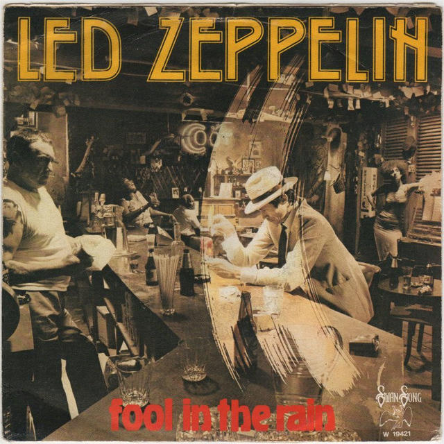
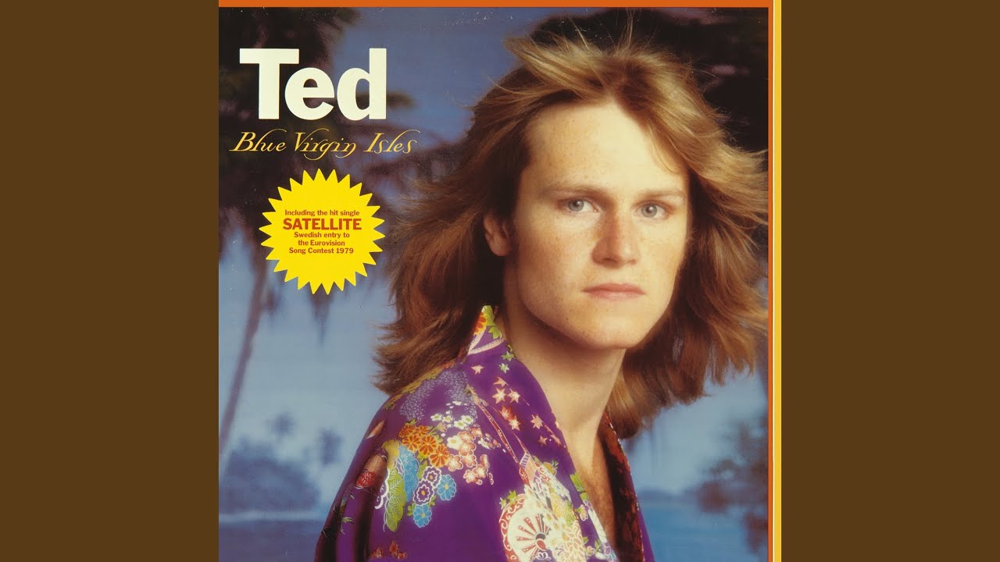

Vet inte vilken nivå du ligger på ?
| Nivå | Speltid | Hur ofta |
|---|---|---|
| Nybörjare | 0-10 timmar | sällan |
| Medel | 20-100 timmar | Regelbundet |
| Expert | 100+ timmar | Väldigt ofta |
| För nybörjare: Ha tålamod och håll fast vid det, spela med vänner för att lära dig spelet bättre. | ||
Välj låt att spela
Nybörjare
Get lucky

nybörjare ---- 4/5
{kind=link}
Dont stop believin
nybörjare ---- 5/5
Tiny Dancer

nybörjare ---- 3/5
Medel
{kind=link}
Let her go
medel ---- 3/5
{kind=link}
Wanted dead or alive
medel ---- 4/5
{kind=link}
Bohemian Rhapsody
medel ---- 5/5
Expert
{kind=link}
Fool In The Rain
Expert ---- 4/5
Through the Fire and Flames

Expert ---- 3/5
{kind=link}
Satellit
Expert ---- 5/5
Vet du inte vilke nivå du ligger på ?
| Nivå | Speltid | Hur ofta |
|---|---|---|
| Nybörjare | 0-10 timmar | sällan |
| Medel | 20-100 timmar | Regelbundet |
| Expert | 100+ timmar | Väldigt ofta |
| För nybörjare: Ha tålamod och håll fast vid det, spela med vänner för att lära dig spelet bättre. | ||